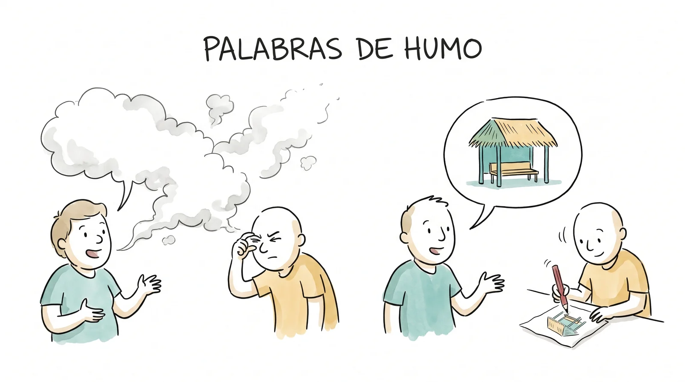

El mazo de la segunda parte: cómo se cuenta el proyecto en voz alta para que alguien dé el siguiente paso. Se proyecta con Presentar; la tecla N muestra las notas del conductor, que traen el estudio detrás de cada consejo y lo que hay que decir con cautela.
El pitch
Que cada equipo salga con dos minutos escritos, ensayados y con la petición lista para dos oídos distintos.
Dos minutos
Contar el proyecto para que alguien dé el siguiente paso.

Están en la fila de las tortillas. Delante hay alguien del Ayuntamiento que les pregunta: "¿y ustedes qué andan haciendo en la presa?". Tienen lo que tarda la fila. ¿Qué le dicen?
Dos personas lo intentan de pie, con reloj a la vista y sin corrección. Anotar en el pizarrón cuánto tardaron y con qué frase cerraron. Lo que casi siempre pasa: empiezan por el principio ("en la materia nos pidieron una consulta y luego un árbol de problemas...") y llegan al mostrador sin haber dicho qué quieren hacer ni qué piden. No decirlo todavía. Al final de la clase las mismas dos personas repiten la escena.

Dos minutos: lo que dura la arena, y una puerta que se empieza a abrir.
Qué es y para qué sirve
Un pitch es contar su proyecto en dos minutos, de manera que quien escucha quiera dar un paso.
La palabra viene del béisbol: es el lanzamiento. Casi nadie decide en dos minutos, así que no sirve para que les den el dinero ahí mismo. Sirve para conseguir lo que sigue: una cita, una visita a la orilla, un lugar en el orden del día. Salió bien si al terminar hay una fecha.
Mientras lo oyen, apunten tres cosas: ¿qué pasa?, ¿qué van a hacer?, ¿qué pidieron?
Leerlo en voz alta y de corrido, a paso tranquilo, con el cronómetro del celular a la vista: dura poco más de minuto y medio. El texto está en la lámina siguiente y en la práctica; no proyectarlo todavía. Al terminar, tres personas dicen lo que apuntaron. Si las tres coinciden, el pitch funcionó: esa es la prueba.
Lo que acaban de oír, por partes
1 · Qué pasa y a quién25 sLos domingos llegan a la orilla de la presa unas ochenta personas, y casi ninguna se queda más de una hora. En la consulta, 31 de 46 nos dijeron lo mismo. Una señora lo resumió así: "Venimos, nos mojamos los pies y nos vamos, porque no hay ni dónde sentarse a la sombra".
2 · Lo que vamos a hacer25 sTres palapas de palma con mesa y seis bancas bajo los sabinos, en la orilla norte. De febrero a mayo de 2027, con palaperos y carpinteros de la comunidad.
3 · Lo que cambia20 sHoy la visita dura menos de una hora. Para diciembre de 2027, la mitad de las familias se queda dos horas o más. Lo contamos nosotros, un domingo al mes.
4 · Lo que ya está puesto20 sEl ejido dio el permiso por escrito y pone la palma, los horcones y cuarenta jornales: cerca de veinte mil pesos. Nosotros traemos el plano, el cronograma y tres cotizaciones por partida.
5 · Lo que te pido · al Ayuntamiento30 sDos viajes de grava y un día de máquina en marzo de 2027. ¿Con quién de Obras Públicas lo vemos, y podemos pasar el jueves a dejar el oficio?
Los números son de ejemplo, para enseñar la forma: cada equipo usa los de su consulta, su cronograma y su presupuesto. Está cargado completo en la práctica, con cuatro peticiones distintas.
El pitch: cinco partes que caben en dos minutos y terminan en una puerta.
Las cinco partes
| Parte | Lo que se dice | Segundos |
|---|---|---|
| 1 · Qué pasa y a quién | El problema, con la voz de una persona y un número | 25 |
| 2 · Lo que vamos a hacer | Qué, dónde y cuándo, en cosas que se pueden dibujar | 25 |
| 3 · Lo que cambia | Lo que la gente va a hacer distinto, con número y fecha | 20 |
| 4 · Lo que ya está puesto | Lo que pone la comunidad y lo que el equipo ya tiene hecho | 20 |
| 5 · Lo que te pido | Una cosa, con cantidad y fecha, y el siguiente paso | 30 |
Antes de pasar a esta lámina, que apuesten cuál parte se lleva más tiempo: casi todos dicen la 2, y es la 5. Son los cuatro movimientos del pitch de la semana 10 con dos cambios: lo que pone la comunidad tiene su propia parte, porque es lo que más convence, y la petición se separa del costo, porque a cada quien se le pide algo distinto.
Tres tamaños del mismo pitch
Hoy se escribe el de dos minutos, porque de él salen los otros dos.
Una persona le toca a la otra "Las mañanitas" con los dedos sobre la mesa. Antes de empezar, apuesta: ¿la va a adivinar?
Luego cambian, con otra canción que todos conozcan. No se vale tararear. Al terminar se cuentan dos cosas en el pizarrón: cuántos apostaron que sí, y cuántas canciones se adivinaron de verdad.
Es la réplica de un experimento famoso. Quien toca oye la canción completa en su cabeza y está seguro de que se entiende; quien escucha solo oye golpes. No explicar todavía: la cifra viene en la lámina que sigue.
Lo que traen en la cabeza, el otro no lo oye
3 de 120 canciones adivinadas
En el experimento original, quienes tocaban apostaron que les adivinarían la mitad. Les adivinaron tres de ciento veinte. Con el proyecto pasa lo mismo: ustedes llevan meses con la consulta, el árbol y el presupuesto en la cabeza, y quien los escucha solo oye golpes sobre la mesa. Todo lo que sigue sirve para que la canción se oiga.
El experimento es de Elizabeth Newton (Stanford, 1990), una tesis que no se publicó; las cifras se conocen por el libro de Chip y Dan Heath, Ideas que pegan. Se le llama la maldición del conocimiento: cuando uno sabe algo, le cuesta imaginar cómo es no saberlo. Comparar con los números del pizarrón.

Ponle cara: la gráfica aburre, la señora del rebozo no.
1 Qué pasa y a quién
Se empieza por el problema, no por la solución. Y se le pone cara.
Primero la persona, después el número que dice cuántas están igual que ella. Con puro número suena a reporte; con pura historia, a lástima.
El respaldo: el caso de una persona concreta mueve a dar más que la estadística, y amontonar cifras sobre el caso le resta fuerza (Small, Loewenstein y Slovic, 2007). Por eso un solo número. La frase tiene que ser de la consulta de verdad, textual: no se inventa una persona. "Informa y motiva" viene de la presentación original del curso, que lo ilustraba con los Acuerdos Recíprocos por Agua de la Fundación Natura Bolivia.

Un número que se ve: nadie se imagina la pesa; todos se imaginan el arroyo lleno.
Un número que se pueda ver
| Se oye y se olvida | Se ve |
|---|---|
| "Cuarenta jornales" | "Veinte personas, dos sábados" |
| "Una hectárea" | "Casi cancha y media de futbol" |
| "Mil cien litros de agua" | "Un tinaco de azotea lleno" |
Un número convence cuando se traduce a algo que la gente ya ha visto. Antes de decir la comparación en voz alta, se hace la cuenta: una imagen exagerada se cae a la primera pregunta.
Reto de un minuto: que cada equipo traduzca el número más importante de su proyecto. La presentación original usaba "ocho toneladas de basura al día" contra "llena el cauce de los manantiales de Concá": sirve para enseñar la forma, pero antes de usarla fuera del salón hay que hacer esa cuenta.

Palabras de humo: si quien escucha no puede dibujarlo, todavía no se dijo.
2 Lo que vamos a hacer
Una frase que se pueda dibujar.
Fortalecer, promover, impulsar, integral, sustentable: suenan a proyecto y no dicen qué va a pasar. La prueba de cada frase: ¿se le puede tomar una foto?
La presentación original recomendaba esas palabras como "poderosas"; hoy las trae cualquier solicitud y quien lee cincuenta en una tarde se las brinca. No están prohibidas en un formato que las pide en el objetivo general: están de más en la voz. Sí, la carrera se llama Producción Agropecuaria Sustentable: en el nombre está bien; en el pitch hay que decir qué hace sustentable al proyecto. Hay un estudio en la misma dirección, hecho con textos escritos: mientras más rebuscado el lenguaje sin necesidad, menos inteligente parece quien escribe (Oppenheimer, 2006).
¿Humo o foto?
Ocho frases de pitch. Se lee cada una, el grupo vota con la mano y luego se aprieta el botón.
Abrir ¿Humo o foto? ▸Detenerse donde el grupo se divida. En las de humo, pedir que alguien la convierta en foto antes de leer la respuesta.
3 Lo que cambia y cómo lo sabremos
El cambio no es la obra. "Tres palapas construidas" es lo que se hizo; el cambio es lo que la gente hace distinto porque la obra existe: se queda, vuelve, trae a la abuela.
Ya lo tienen escrito: es el renglón de propósito de su marco lógico, el que dice para qué sirve lo que se construye, con su número de hoy y su meta.
4 Lo que ya está puesto
Nadie quiere ser el primero en poner.
Quien decide se pregunta dos cosas: ¿esto ya va caminando? y ¿esta gente sabe lo que hace? Se contestan con hechos: el permiso por escrito, la palma, los jornales, dichos en pesos; y el plano, el cronograma y las cotizaciones que el equipo ya trae.
Sale de la columna de especie de su presupuesto: lo que no se compra porque alguien lo pone. El respaldo: en campañas de donativos, avisar que ya hay una parte reunida sube lo que dan los demás (List y Lucking-Reiley, 2002; Karlan y List, 2007). Son estudios con donantes individuales, no con faenas: es una analogía y así se dice. Y sobre el equipo: en un estudio con inversionistas, lo que predijo el sí fue qué tan preparado se veía quien presentaba, no qué tan apasionado (Chen, Yao y Kotha, 2009). La presentación original lo decía así: demuestra estar muy bien preparado, no tanto estar súper motivado.
5 Lo que te pido
Una cosa, con cantidad y con fecha. Y luego, silencio.
"Lo que guste apoyar" le deja el trabajo al otro, y lo más fácil para él es decir "déjenme ver". Después de pedir, se guarda silencio: quien sigue hablando por nervios se contesta solo, y casi siempre se contesta que no.
Un minuto en parejas: una persona pide algo concreto ("¿me prestas tu moto el sábado de diez a dos?") y aguanta cinco segundos callada, mirando a la otra. Se sienten eternos; por eso hay que practicarlos. El respaldo: decir en qué se va a usar exactamente lo que se pide aumenta lo que la gente da (Cryder, Loewenstein y Scheines, 2013), y quien pide subestima más o menos a la mitad la disposición del otro a decir que sí (Flynn y Lake, 2008).
La escalera de la petición: el plan B de su mapa de gestión es el segundo escalón.
El pitch de pasillo cabe en una frase
"Los domingos llegan ochenta personas a la orilla y quieren quedarse; pero no hay sombra ni dónde sentarse; por eso proponemos tres palapas, y le pedimos dos viajes de grava."
Un proyecto contado con puros "y... y... y..." es una lista. El "pero" pone el problema y el "por eso" pone la salida. Tres minutos: cada equipo escribe su frase y dos la leen.
La herramienta es de Randy Olson, un biólogo que se volvió cineasta (Houston, We Have a Narrative, 2015). En inglés es "And, But, Therefore"; él la tomó de los guionistas de la serie South Park, que revisan cada guion cambiando los "y" por "pero" o "por lo tanto". No hay traducción oficial al español.
Cuatro oídos: el mismo proyecto, cuatro maneras de escucharlo.
El mismo proyecto, cuatro oídos
| Quién escucha | Lo que le importa | Lo que se le pide |
|---|---|---|
| El Ayuntamiento | Que la gente ya lo pida y que quepa en su año. | Especie: máquina, material, un visto bueno. |
| Una fundación o programa | Que encaje en lo que apoyan y se pueda medir. | Un monto dentro de su tope, para algo que sí pagan. |
| Un negocio de la zona | Que sea cerca y que se sepa que ayudó. | Algo de lo que vende: cemento, un flete, las tortas. |
| La asamblea | Que sea lo que la gente dijo, y quién lo cuida. | El acuerdo en acta, las faenas y un comité. |
Las partes 1 a 4 casi no cambian. Cambian la petición y las palabras: a la fundación se le habla con las de su convocatoria, y a la asamblea, con las de la gente.
Esto parece contradecir lo de las palabras de humo y no lo contradice: usar la palabra exacta con que la fundación nombra su línea de apoyo sirve para que sepan dónde cabe el proyecto; lo demás se sigue diciendo en foto. La tabla es experiencia de oficio, no un estudio.
Ahora escucha el dueño o la dueña de la ferretería del pueblo. ¿Qué le quitan al pitch, qué le ponen y qué le piden?
Así se contesta: se le quita el número de la meta, que no le dice nada. Se le pone el lugar exacto y quién va los domingos, porque son sus clientes. Y se le pide algo de lo que tiene en la bodega, con número: "doce bultos de cemento en febrero; va su nombre en la placa y lo invitamos a la inauguración". Pedirle dinero es pedirle lo que más le cuesta soltar.
La asamblea tiene sus reglas
La asamblea decide por mayoría de los ejidatarios presentes, y lo que decide vale también para quien no fue.
Ley Agraria, artículos 24, 25, 27 y 31. Las recomendaciones para hablar son del manual de Frans Geilfus, 80 herramientas para el desarrollo participativo: imágenes que todos entiendan, poca información por cartel, leer en voz alta porque parte del público no lee, respetar la cortesía del lugar, y hacer compromisos, no promesas. El uso del terreno común del ejido solo lo puede autorizar la asamblea.

En la mano: el plano sobre el escritorio; el proyector, dormido.
Lo que se lleva en la mano
El plano o el fotomontaje en la mano le gana a veinte diapositivas.
En una oficina de Arroyo Seco no hay proyector, ni hace falta. Se pone el fotomontaje sobre el escritorio, se señala con el dedo y se deja una hoja: el proyecto en una página, con un teléfono. Las diapositivas son como los hijos: a cada quien le parecen bonitas las suyas.
Las manos ayudan: en un estudio con inversionistas, quienes dibujaban la idea con las manos mientras hablaban fueron mejor evaluados (Clarke, Cornelissen y Healey, 2019). Si toca presentar con pantalla ante un comité, la regla de Guy Kawasaki: diez láminas, veinte minutos, letra de treinta puntos. La frase de los hijos viene de la presentación original.

Los nervios y la emoción son las mismas mariposas.
Los nervios
En vez de "estoy tranquilo", díganse "estoy emocionado". Y ensayen en voz alta, frente a alguien.
Los nervios y la emoción se sienten igual en el cuerpo. Calmarse a la fuerza no funciona; cambiarle el nombre a lo que se siente, sí. Y un pitch leído en silencio diez veces sigue sin estar ensayado: se dice de pie, con reloj y delante de una persona, tres veces.
El respaldo: quienes dijeron "estoy emocionado" antes de hablar en público fueron mejor evaluados que quienes dijeron "estoy tranquilo" (Brooks, 2014). Lo que más predijo la calidad de un discurso de estudiantes fue haberlo ensayado frente a alguien (Menzel y Carrell, 1994). Sobre las muletillas: unas cuantas no dañan; lo que daña es una cada cinco segundos, y pesan más los "eee" que los "este" (Laske y DiGennaro Reed, 2024). La meta es pocas, no cero. La presentación original pedía además convencerse uno primero: si el equipo no se cree su número, nadie más se lo va a creer.
Las preguntas difíciles
Una pregunta sobre el riesgo se contesta con algo que ya se logró.
| Lo que les dicen | Lo que contestan |
|---|---|
| "Están muy jóvenes." | "Por eso venimos con el permiso del ejido y tres cotizaciones por partida. ¿Qué le gustaría revisar?" |
| "¿Y quién lo va a mantener?" | "El comité que nombró la asamblea, con una faena cada seis meses que ya está en el cronograma." |
| "Déjenme el documento y yo les llamo." | "Aquí está la hoja. ¿Le parece si pasamos el jueves a las once por su opinión?" |
En un estudio de rondas de inversión, a quien le preguntaron por riesgos y contestó hablando de logros le fue mucho mejor que a quien contestó a la defensiva (Kanze, Huang, Conley y Higgins, 2018). Sobre la edad no hay estudio específico: se aplica eso mismo, y se pide consejo, que hace ver competente a quien lo pide (Brooks, Gino y Schweitzer, 2015). Para "ahorita no hay presupuesto" está la escalera: se baja al plan B, o se pregunta cuándo se arma el presupuesto del año que entra. Cada equipo llega con su pregunta temida ya contestada por escrito: está en la práctica.
Va un pitch de treinta segundos. Cuenten los tropiezos con los dedos.
Actuarlo de pie, con cara de pena: "Buenas tardes, perdón por la molestia, somos nada más unos estudiantes y no nos dio tiempo de traer el plano. Nuestro proyecto busca fortalecer de manera integral el tejido social y promover una cultura sustentable. El 67 por ciento, el 43 por ciento y el 12 por ciento de los encuestados opinan distinto. La gente allá no tiene nada, da tristeza. Esperamos y soñamos que algún día cambie. Entonces, lo que guste apoyarnos, lo que sea su voluntad... y bueno, también queríamos comentarle que...". Preguntar cuántos contaron: hay siete, y están en la lámina que sigue.
Los siete tropiezos
| El tropiezo | Cómo suena |
|---|---|
| Pedir "apoyo" | "Lo que guste aportar." Sin cantidad ni fecha. |
| Puros números | Tres porcentajes seguidos y ninguna persona. |
| La lástima | Contar solo carencias. Quien apoya quiere sumarse a algo que camina. |
| Los deseos y las excusas | "Esperamos", "soñamos", "no nos dio tiempo", "somos nada más estudiantes". |
| El humo | Fortalecer, promover, integral, sustentable. |
| No saber a quién se le habla | Pedirle a la fundación lo que sus reglas no pagan. |
| Seguir hablando | Pasarse del tiempo, o pedir y no callarse. |
Varios vienen de la presentación original (deseos, excusas, ser negativo). La práctica revisa sola el humo, los deseos, las excusas, el tiempo y si la petición trae cantidad y fecha.
Y en su carrera: el mismo pitch para un proyecto productivo
| Parte | Una sala para sacar la miel |
|---|---|
| 1 · Qué pasa y a quién | "Doce apicultores de la comunidad sacan la miel en el patio de su casa. Uno nos dijo: el comprador vino, vio dónde la sacamos y ya no volvió." |
| 2 · Lo que vamos a hacer | "Una sala de cuatro por seis metros, con piso de cemento, malla en las ventanas y un extractor compartido, lista antes de la cosecha de abril." |
| 3 · Lo que cambia | "Hoy la venden a granel al que pase. En un año, los doce le venden juntos a un comprador fijo." |
| 4 · Lo que ya está puesto | "Un socio presta el terreno por escrito, entre todos ponen la mano de obra y ya tienen el extractor." |
| 5 · Lo que te pido | "A Desarrollo Agropecuario del municipio: cuarenta bultos de cemento y doce láminas en febrero. ¿Con quién lo vemos?" |
Cambia el tema y no cambia la forma: una voz, una cosa que se puede dibujar, un cambio con fecha, lo que el grupo ya puso y una petición con cantidad.
Es un ejemplo inventado para enseñar la forma, con un proyecto de los que van a encontrar al egresar. Sirve igual para una biofábrica de bioinsumos, un bordo, un vivero o un huerto escolar. Preguntar: ¿cuál sería el plan B de esta petición?
Su pitch de dos minutos, con la petición para dos oídos.
Abran la práctica del pitch. Escriban sus cinco partes: la hoja mide los segundos de cada una y avisa si falta la persona, el número, la fecha o la petición, y si hay humo. Escriban la petición para dos oídos distintos. Luego ensayen dos veces con el reloj de la hoja: una con el guion a la vista y otra con el guion escondido.
Abrir la práctica ▸ El acordeón de la claseVeinticinco minutos para escribir y quince para los dos ensayos. Rondar preguntando una sola cosa: "¿qué me estás pidiendo?". Si todavía no sale en una frase, le falta una vuelta.
Cada equipo presenta de pie ante otro equipo, que hace de Ayuntamiento, de fundación, de negocio o de asamblea.
El papel se saca de un papelito un minuto antes. Cada ronda dura seis minutos: dos de pitch, dos de preguntas y dos para llenar la hoja de quien escucha. La última casilla es la que cuenta: si de mí dependiera, ¿doy el siguiente paso?
Con seis equipos en tres parejas que se alternan caben dos rondas. Quien hace de oído no interrumpe el pitch y pregunta desde su papel. La hoja pide una cosa que le gustó, una que se pregunta y un "¿y si...?". Al final, las dos personas de la fila de las tortillas repiten la escena del inicio y se compara con lo anotado en el pizarrón.